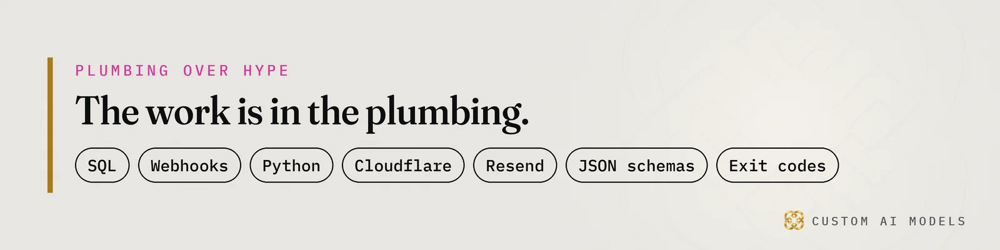

Custom AI Models
Custom AI Models Yeriko Vargas · Founder, Custom AI Models · Oct 2026
Yeriko Vargas · Founder, Custom AI Models · Oct 2026Short answer. Custom AI Models builds custom AI models for operations data, and for HVAC distributors in Troy it starts with the data, not the model. Clean order, stock and contractor-account records come first. Then AI engines can find, read and recommend the firm, and the model goes last.
How do HVAC buyers find a supplier in Troy now?
Buyers now ask ChatGPT, Copilot and Google's AI answers who to call, and those answers name a few firms and skip the rest. A purchasing manager in Troy types a question about a rooftop unit or a parts source, reads one summary and picks up the phone. The old list of links is losing its audience.
A top ranking buys less than it did. The answer box is where the decision happens, so the work starts with what the engine can read on your site.
- Product lines written as plain text, not locked in a PDF catalog.
- Service areas and counter hours a crawler can reach.
- Part numbers and stock status that match your ERP.
What does it cost an HVAC distributor to stay invisible?
An invisible supplier loses the first call, and the first call is where an account begins. When an engine names three competitors and skips you, the contractor never compares your price. They never see your stock or your counter hours. You do not lose the bid. You never enter it.
The owner's question to Copilot is already plain: what are automated lead generation pipelines for commercial mechanical firms, and who builds them? The engine answers with whoever it can read. If your site is a PDF catalog and a phone number, you are not in that sentence.
- New contractor accounts go to the firm the engine names.
- Quotes get written for buyers who already chose someone else.
- Reps chase a list of old contacts while new demand never reaches the counter.
- Your best repeat customers still ask a person for what a system could reorder.

Why do HVAC wholesale inventory management systems come first?
Engines and models both read your data before they read your pitch. HVAC wholesale inventory management systems hold part numbers, stock counts, refrigerant records and contractor accounts. In most shops those live in spreadsheets and ERP exports that disagree with each other. A model pointed at that mess repeats the mismatch with confidence. That becomes a financial liability, and sometimes a legal one.
The order never changes. Four steps, in sequence:
- Unify the ERP exports, spreadsheets and website catalog into one table of parts and accounts.
- Model it: one record per part, one per contractor, one per order.
- Gate every step with deterministic validation gates: schema checks, exit codes, a failed row stops the run.
- Put the model last.
We walked through the counter side of this in wholesale inventory work in Oakland County, and the reorder side in ERP automation for repeat contractor orders. If a demo already broke on your files, the data was the cause.
Where do custom AI models for operations data fit?
Last. Custom AI models for operations data sit on a clean base: unified orders, stock, estimating records and contractor accounts. Industrial HVAC supply automation Troy MI firms can use starts with that base. Without it, the model guesses a part number, and a contractor receives the wrong coil.
With the base in place, the work is plain Python, webhooks and email through Resend. A contractor's purchase history triggers a reorder prompt. A stock threshold triggers a purchasing alert. A quote draft gets checked against the price book before a person sees it. Telemetry logs every call, so data drift shows up as a failed check and not as a surprise on an invoice.
The same base powers B2B contractor acquisition platforms for distributors. Think of a contractor directory with real product lines, real service areas and plain-text pages that engines can read and quote. Automated lead generation pipelines for commercial mechanical firms grow from that, not from a bought list.
This is the shape of every custom AI models built on your data project we scope. Yeriko Vargas has spent 8.5 years in data, and Custom AI Models has built this way since 2022.
What does the HVAC SEO + GEO Doctor check?
Custom AI Models runs an HVAC SEO + GEO Doctor that checks whether Google and AI engines can find, read and recommend a firm. It gets you started. It sells no ranking and promises none. It shows what the engines see on your site today, so the data work begins from facts.
- Can crawlers reach your product and service pages at all?
- Is the text readable as plain words, or locked in images and PDFs?
- Does your schema repeat only what the page shows?
- Does each page answer its question in the first sentence or two?
The checklist behind it is public in our GEO vs SEO checklist. The Doctor applies it to your site and tells you what to fix first. Founders and operators in Birmingham, Troy and across Oakland County can run it before spending a dollar.
Questions people ask
What data does an HVAC wholesaler need before automating anything?
Start with three sources: your ERP order export, your stock counts and your contractor account list. They need shared part numbers and account IDs. If the same part has three spellings across files, fix that first. Automation on mismatched records only repeats the mismatch faster.
Do we have to replace our ERP to get AI search visibility?
No. The ERP stays the system of record. The work is exporting clean data from it, modeling parts and accounts once, and publishing readable pages that engines can quote. Replacing the ERP is a separate decision and rarely the first one.
What breaks first when AI meets distributor data?
Part numbers and units. One file says a case, another says each, a third drops a suffix. The model then quotes the wrong item with a confident tone. Validation gates catch those rows before any model reads them, which is why gates come before generation.
Can the HVAC SEO + GEO Doctor guarantee that AI engines name us?
No, and nobody honest can. The Doctor checks whether Google and AI engines can find, read and recommend your firm, then lists what blocks them. It sells the fix, not a ranking. Engines decide who they cite.